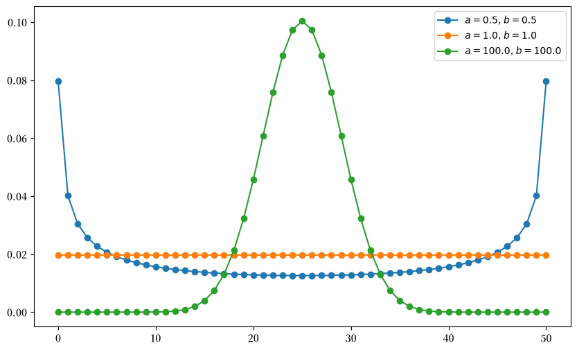
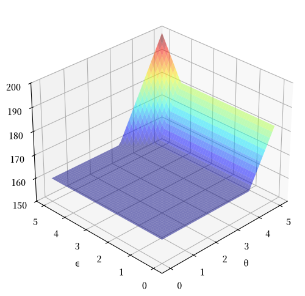
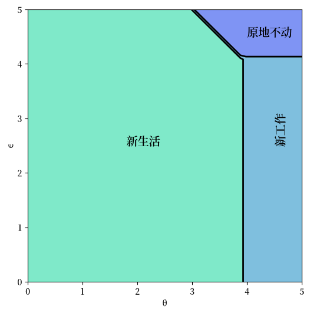
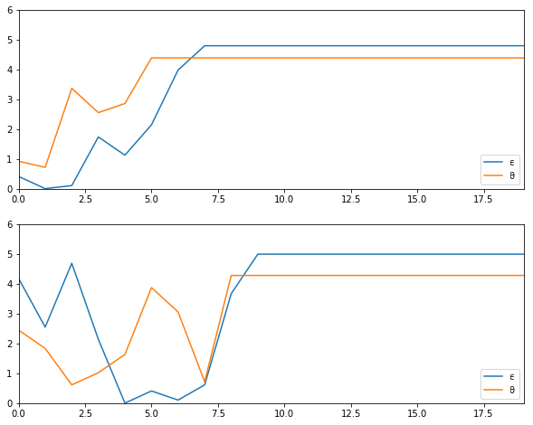
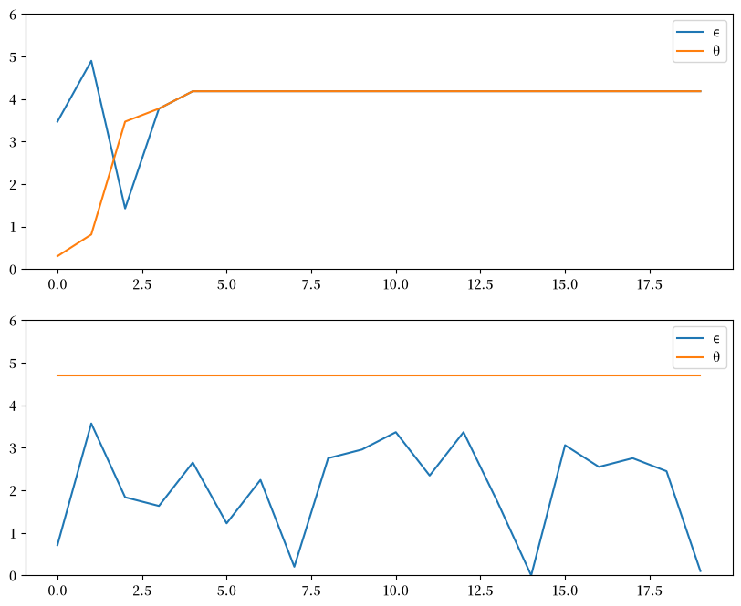
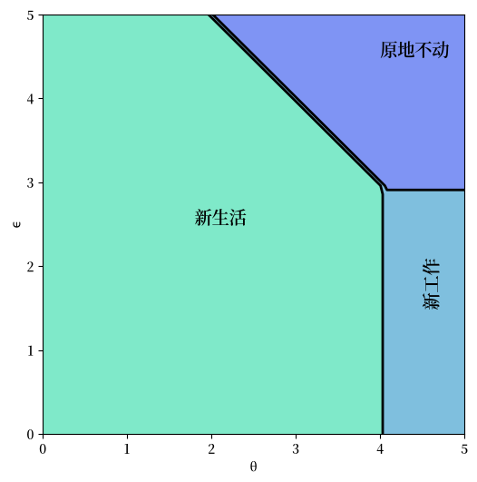

58. 工作搜寻 VI：职业选择建模#
GPU
本讲座是在配有GPU的机器上构建的——不过没有GPU也可以运行。
Google Colab 提供带GPU的免费套餐，使用方法如下：
点击右上角的”播放”图标
选择 Colab
将运行时环境设置为包含GPU
除了 Anaconda 中已有的库外，本讲座还需要以下库：
!pip install quantecon jax
58.1. 概述#
接下来，我们研究一个关于职业和工作选择的计算问题。
这个模型最初由Derek Neal提出[Neal, 1999]。
本文的讲解借鉴了[Ljungqvist and Sargent, 2018]第6.5节的内容。
我们先导入一些包：
from typing import NamedTuple
import matplotlib.pyplot as plt
import matplotlib as mpl
FONTPATH = "fonts/SourceHanSerifSC-SemiBold.otf"
mpl.font_manager.fontManager.addfont(FONTPATH)
plt.rcParams['font.family'] = ['Source Han Serif SC', 'DejaVu Sans']
from matplotlib import cm
from mpl_toolkits.mplot3d.axes3d import Axes3D
import jax
import jax.numpy as jnp
import jax.random as jr
from quantecon.distributions import BetaBinomial
58.1.1. 模型特点#
模型中的个体们通过选择职业和职业内的工作来最大化预期的贴现工资收入。
这是一个包含两个状态变量的无限期动态规划问题。
58.2. 模型#
在下文中，我们区分职业和工作，其中
职业被理解为包含许多工作的一个领域，而
工作被理解为在特定公司的一个职位
对于劳动者来说，工资可以分解为工作和职业的贡献
\(w_t = \theta_t + \epsilon_t\)，其中
\(\theta_t\) 是在时间 \(t\) 职业的贡献
\(\epsilon_t\) 是在时间 \(t\) 工作的贡献
在时间 \(t\) 开始时，劳动者有以下选择
保持当前的（职业，工作）组合 \((\theta_t, \epsilon_t)\) — 以下简称为”原地不动”
保持当前职业 \(\theta_t\) 但重新选择工作 \(\epsilon_t\) — 以下简称为”新工作”
同时重新选择职业 \(\theta_t\) 和工作 \(\epsilon_t\) — 以下简称”新生活”
\(\theta\) 和 \(\epsilon\) 的抽取彼此独立，且与过去的值无关，其中：
\(\theta_t \sim F\)
\(\epsilon_t \sim G\)
注意，劳动者没有保留工作但重新选择职业的选项 — 开始新职业总是需要开始新工作。
年轻劳动者的目标是最大化折现工资的预期总和
且受限于上述的选择限制。
令 \(v(\theta, \epsilon)\) 表示价值函数，即在给定初始状态 \((\theta, \epsilon)\) 的情况下，所有可行的（职业，工作）策略中 (58.1) 的最大值。
价值函数满足
其中
显然 \(I\)、\(II\) 和 \(III\) 分别对应”原地不动”、“新工作”和”新生活”。
58.2.1. 参数化#
如同 [Ljungqvist and Sargent, 2018] 第6.5节所述，我们将关注模型的离散版本，参数设置如下：
\(\theta\) 和 \(\epsilon\) 的取值都在集合
jnp.linspace(0, B, grid_size)中 — 在 \(0\) 和 \(B\) 之间（包含端点）的均匀网格点grid_size = 50B = 5β = 0.95
分布 \(F\) 和 \(G\) 是离散分布，从网格点 jnp.linspace(0, B, grid_size) 中生成抽样。
Beta-二项分布族是一个非常有用的离散分布族，其概率质量函数为
解释：
从形状参数为 \((a, b)\) 的 Beta 分布中抽取 \(q\)
进行 \(n\) 次独立的二值试验，每次成功概率为 \(q\)
\(p(k \,|\, n, a, b)\) 就是这 \(n\) 次试验中出现 \(k\) 次成功的概率
优良性质：
形式非常灵活的一类分布，包括均匀分布、对称单峰分布等
只有三个参数
下图展示了当\(n=50\)时，不同形状参数对概率质量函数的影响。
n = 50
a_vals = [0.5, 1, 100]
b_vals = [0.5, 1, 100]
fig, ax = plt.subplots(figsize=(10, 6))
for a, b in zip(a_vals, b_vals):
ab_label = f'$a = {a:.1f}$, $b = {b:.1f}$'
ax.plot(range(n + 1), BetaBinomial(n, a, b).pdf(), '-o', label=ab_label)
ax.legend()
plt.show()
findfont: Failed to find font weight normal, now using 600.
findfont: Failed to find font weight normal, now using 600.
findfont: Failed to find font weight normal, now using 600.

58.3. 实现#
我们将模型的基本参数存储在一个 NamedTuple 中，该结构由一个工厂函数构建。
class CareerWorkerProblem(NamedTuple):
β: float # 贴现因子
θ: jnp.ndarray # θ值集合（职业）
ϵ: jnp.ndarray # ϵ值集合（工作）
F_probs: jnp.ndarray # 新职业抽取的分布
G_probs: jnp.ndarray # 新工作抽取的分布
F_mean: float # F 的均值
G_mean: float # G 的均值
def create_career_worker_problem(B=5.0, # 上界
β=0.95, # 贴现因子
grid_size=50, # 网格大小
F_a=1,
F_b=1,
G_a=1,
G_b=1):
"创建职业选择模型的一个实例。"
θ = jnp.linspace(0, B, grid_size)
ϵ = jnp.linspace(0, B, grid_size)
F_probs = jnp.array(BetaBinomial(grid_size - 1, F_a, F_b).pdf())
G_probs = jnp.array(BetaBinomial(grid_size - 1, G_a, G_b).pdf())
return CareerWorkerProblem(β=β, θ=θ, ϵ=ϵ,
F_probs=F_probs, G_probs=G_probs,
F_mean=θ @ F_probs, G_mean=ϵ @ G_probs)
贝尔曼算子为 \(Tv(\theta, \epsilon) = \max\{I, II, III\}\)，其中 \(I\)、\(II\) 和 \(III\) 如 (58.2) 中所给出。
我们先为单个状态 \((\theta_i, \epsilon_j)\) 写出这三个值， 使代码紧密对应方程本身。
def _B(v, cw, i, j):
"""
状态 (θ_i, ϵ_j) 下三种可选方案的取值，顺序与贝尔曼方程中出现的顺序一致。
"""
stay_put = cw.θ[i] + cw.ϵ[j] + cw.β * v[i, j] # I
new_job = cw.θ[i] + cw.G_mean + cw.β * v[i, :] @ cw.G_probs # II
new_life = cw.G_mean + cw.F_mean + cw.β * cw.F_probs @ v @ cw.G_probs # III
return jnp.array([stay_put, new_job, new_life])
现在我们在每个状态上评估 _B。
与在 \(i\) 和 \(j\) 上写两层嵌套循环不同，我们对 jax.vmap 应用两次。
在 in_axes 中，0 表示被映射的参数，而 None 表示保持固定的参数。
# _B 的参数顺序为 (v, cw, i, j)
_B_j = jax.vmap(_B, in_axes=(None, None, None, 0)) # 对 j 进行映射
_B_ij = jax.vmap(_B_j, in_axes=(None, None, 0, None)) # 然后对 i 进行映射
@jax.jit
def B(v, cw):
"每个状态下每个选项的取值；形状为 (grid_size, grid_size, 3)。"
n = len(cw.θ)
return _B_ij(v, cw, jnp.arange(n), jnp.arange(n))
现在，贝尔曼算子和贪婪策略分别是同一个数组的最大值和最大值所在的下标。
@jax.jit
def T(v, cw):
"贝尔曼算子。"
return jnp.max(B(v, cw), axis=-1)
@jax.jit
def get_greedy(v, cw):
"v-贪婪策略，编码为 1 = 原地不动，2 = 新工作，3 = 新生活。"
return jnp.argmax(B(v, cw), axis=-1) + 1
最后，solve_model 通过迭代贝尔曼算子来求出不动点。
我们使用 jax.lax.while_loop，这样整个迭代过程可以编译为单个操作，
并限制迭代步数上限，以确保循环总能终止。
@jax.jit
def solve_model(cw, tol=1e-4, max_iter=1_000):
"""
通过价值函数迭代求解模型。
返回价值函数、所用的迭代次数以及最终误差，以便调用者检查收敛情况。
"""
def condition(loop_state):
i, v, error = loop_state
return (error > tol) & (i < max_iter)
def update(loop_state):
i, v, error = loop_state
v_new = T(v, cw)
return i + 1, v_new, jnp.max(jnp.abs(v_new - v))
n = len(cw.θ)
v_init = jnp.full((n, n), 100.0)
i, v, error = jax.lax.while_loop(condition, update, (0, v_init, tol + 1))
return v, i, error
备注
这里的网格较小，该模型在 NumPy 中也能运行良好。
我们使用 JAX，是因为其代码可读性几乎与 NumPy 等价的实现一样好， 同时具有更强的扩展性 — 无论是使用更精细的网格，还是使用带有更多状态变量的 更丰富的模型版本，同一份代码都能充分利用 GPU。
在 练习 58.2 中，我们同时模拟了 25,000 条独立的职业路径， 这种优势已经可以看出来。
这是模型的解决方案 – 一个近似值函数
cw = create_career_worker_problem()
v_star, num_iter, error = solve_model(cw)
greedy_star = get_greedy(v_star, cw)
print(f"Converged in {num_iter} iterations with error {error:.2e}.")
fig = plt.figure(figsize=(8, 6))
ax = fig.add_subplot(111, projection='3d')
tg, eg = jnp.meshgrid(cw.θ, cw.ϵ)
ax.plot_surface(tg,
eg,
v_star.T,
cmap=cm.jet,
alpha=0.5,
linewidth=0.25)
ax.set(xlabel='θ', ylabel='ϵ', zlim=(150, 200))
ax.view_init(ax.elev, 225)
plt.show()
Converged in 216 iterations with error 9.16e-05.

这就是最优策略
fig, ax = plt.subplots(figsize=(6, 6))
tg, eg = jnp.meshgrid(cw.θ, cw.ϵ)
lvls = (0.5, 1.5, 2.5, 3.5)
ax.contourf(tg, eg, greedy_star.T, levels=lvls, cmap=cm.winter, alpha=0.5)
ax.contour(tg, eg, greedy_star.T, colors='k', levels=lvls, linewidths=2)
ax.set(xlabel='θ', ylabel='ϵ')
ax.text(1.8, 2.5, '新生活', fontsize=14)
ax.text(4.5, 2.5, '新工作', fontsize=14, rotation='vertical')
ax.text(4.0, 4.5, '原地不动', fontsize=14)
plt.show()
findfont: Failed to find font weight normal, now using 600.

解释：
如果工作和职业都很差或一般，劳动者会尝试新的工作和新的职业。
如果职业足够好，劳动者会保持这个职业，并尝试新的工作直到找到一个足够好的工作。
如果工作和职业都很好，劳动者会原地不动。
注意，劳动者会倾向于保持一个好的职业发展方向，但是高薪工作却不一定会一直做下去。
原因是高终身工资需要职业方向和职业内的工作都很好，而且劳动者不能在不换工作的情况下换职业。
有时必须牺牲一个好工作来转向一个更好的职业。
58.4. 练习#
练习 58.1
使用函数 create_career_worker_problem 中的默认参数设置，
当劳动者遵循最优策略时，生成并绘制 \(\theta\) 和 \(\epsilon\) 的典型样本路径。
特别是，除了随机性之外，复现以下图形（其中横轴表示时间）

提示
要从分布 \(F\) 和 \(G\) 中生成抽样，可用 jnp.searchsorted 对其累积分布函数求逆。
解答 练习 58.1
模拟工作/职业路径。
在阅读代码时，请注意 greedy_star[i, j] = 在 \((\theta_i, \epsilon_j)\) 处的策略 = 1、2 或 3；分别表示’原地不动’、‘新工作’和’新生活’。
def draw(key, cdf):
"根据给定的累积分布函数从分布中抽取一个下标。"
return jnp.searchsorted(cdf, jr.uniform(key), side="right")
def simulate_path(cw, greedy_star, key, t=20):
"在贪婪策略下模拟一条长度为 t 的职业/工作路径。"
F_cdf, G_cdf = jnp.cumsum(cw.F_probs), jnp.cumsum(cw.G_probs)
def update(state, key):
i, j = state
action = greedy_star[i, j]
key_F, key_G = jr.split(key)
# 职业只在'新生活'下改变；工作除非'原地不动'否则都会改变
i_new = jnp.where(action == 3, draw(key_F, F_cdf), i)
j_new = jnp.where(action == 1, j, draw(key_G, G_cdf))
return (i_new, j_new), (i_new, j_new)
_, (i_path, j_path) = jax.lax.scan(update, (0, 0), jr.split(key, t))
return cw.θ[i_path], cw.ϵ[j_path]
cw = create_career_worker_problem()
v_star, _, _ = solve_model(cw)
greedy_star = get_greedy(v_star, cw)
key = jr.key(42)
fig, axes = plt.subplots(2, 1, figsize=(10, 8))
for ax in axes:
key, subkey = jr.split(key)
θ_path, ϵ_path = simulate_path(cw, greedy_star, subkey)
ax.plot(ϵ_path, label='ϵ')
ax.plot(θ_path, label='θ')
ax.set_ylim(0, 6)
ax.legend()
plt.show()

练习 58.2
现在让我们考虑从起点 \((\theta, \epsilon) = (0, 0)\) 开始，劳动者需要多长时间才能找到一份永久性工作。
换句话说，我们要研究这个随机变量的分布
显然，当且仅当 \((\theta_t, \epsilon_t)\) 进入 \((\theta, \epsilon)\) 空间的”原地不动”区域时，劳动者的工作才会变成永久性的。
令 \(S\) 表示这个区域，\(T^*\) 可以表示为在最优策略下首次到达 \(S\) 的时间：
收集这个随机变量的25,000个样本并计算中位数（应该约为7）。
用 \(\beta=0.99\) 重复这个练习并解释变化。
解答 练习 58.2
原始参数下的中位数可以按如下方式计算。
每一次模拟都是一个独立的序贯搜索过程，因此我们先用 jax.lax.while_loop
写出一次模拟，然后用 jax.vmap 一次性运行 25,000 次。
def passage_time(cw, greedy_star, key, max_t=1_000):
"劳动者首次选择原地不动所需的时间。"
F_cdf, G_cdf = jnp.cumsum(cw.F_probs), jnp.cumsum(cw.G_probs)
def condition(state):
i, j, t, key = state
return (greedy_star[i, j] != 1) & (t < max_t)
def update(state):
i, j, t, key = state
action = greedy_star[i, j]
key, key_F, key_G = jr.split(key, 3)
i_new = jnp.where(action == 3, draw(key_F, F_cdf), i)
j_new = jnp.where(action == 1, j, draw(key_G, G_cdf))
return i_new, j_new, t + 1, key
_, _, t, _ = jax.lax.while_loop(condition, update, (0, 0, 0, key))
return t
@jax.jit
def median_passage_time(cw, greedy_star, key, M=25_000):
"在 M 次独立模拟中，安定下来所需时间的中位数。"
keys = jr.split(key, M)
times = jax.vmap(passage_time, in_axes=(None, None, 0))(cw, greedy_star, keys)
return jnp.median(times)
median_passage_time(cw, greedy_star, jr.key(42))
Array(7., dtype=float32)
要计算 \(\beta=0.99\)（而不是默认值 \(\beta=0.95\)）情况下的中位数， 我们创建一个新的实例并重新求解。
cw_patient = create_career_worker_problem(β=0.99)
v_patient, _, _ = solve_model(cw_patient)
greedy_patient = get_greedy(v_patient, cw_patient)
median_passage_time(cw_patient, greedy_patient, jr.key(42))
Array(14., dtype=float32)
这些中位数会受随机性影响，但应该分别约为7和14。
不出所料，更有耐心的劳动者会等待更长时间才会安定在最终的工作岗位上。
练习 58.3
将参数设置为 G_a = G_b = 100 并生成一个新的最优策略图 – 解释。
解答 练习 58.3
这是一个解决方案
cw = create_career_worker_problem(G_a=100, G_b=100)
v_star, _, _ = solve_model(cw)
greedy_star = get_greedy(v_star, cw)
fig, ax = plt.subplots(figsize=(6, 6))
tg, eg = jnp.meshgrid(cw.θ, cw.ϵ)
lvls = (0.5, 1.5, 2.5, 3.5)
ax.contourf(tg, eg, greedy_star.T, levels=lvls, cmap=cm.winter, alpha=0.5)
ax.contour(tg, eg, greedy_star.T, colors='k', levels=lvls, linewidths=2)
ax.set(xlabel='θ', ylabel='ϵ')
ax.text(1.8, 2.5, '新生活', fontsize=14)
ax.text(4.5, 1.5, '新工作', fontsize=14, rotation='vertical')
ax.text(4.0, 4.5, '原地不动', fontsize=14)
plt.show()

在新图中，你可以看到劳动者选择留在原地的区域变大了，这是因为 \(\epsilon\) 的分布更加集中在均值附近，使得高薪工作的可能性降低了。